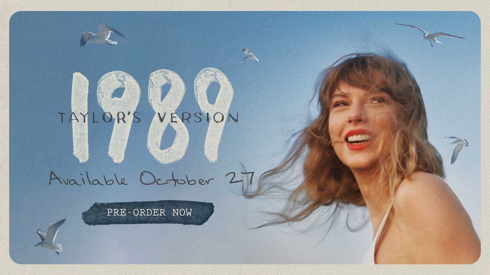
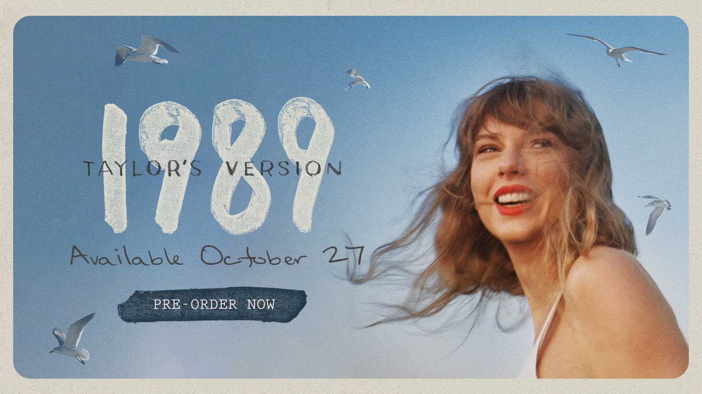

1989 Taylor's version Available October 27!!!
 

Mark your calendars, folks! On Oct. 27, Taylor Swift's fifth studio album will rightfully be hers. 1989 (Taylor's Version) will be Ms. Swift's fourth re-recorded album, and even though it has yet to come out, it has already caused a stir. Her five vault tracks already have much hype surrounding them, solely off of track names. 1989 was initially released in 2014 when Taylor Swift was trying to shift her musical focus from country to pop. Being that 1989 was the year Taylor was born, she saw this album as a way to let her fans peek into her personal life. 1989 had singles such as “Shake It Off,” “Bad Blood,” and “Blank Space,” all of which led to solidifying Swift's place as a pop icon. With the highly anticipated re-release right around the corner, I figured now was a good time to revisit her Grammy-award-winning album, as a way to say “goodbye” to the old and welcome in the new.
The opening track starts with an upbeat pop-synth sound, accompanied by claps that almost seem to be welcoming the listener to New York, in addition to the new era Swift was about to enter. Wanting the album to have a more authentic 80s pop sound, she worked with producer Max Martin who helped create 90s/2000s hits we know and love today, such as Britney Spears' “…Baby One More Time” and NSYNC's “It's Gonna Be Me.” Swift's optimism shines through in her vocals, as she describes how New York has been waiting for her, and anyone for that matter. Anyone can be whomever they want to be, and it seems as if Swift is singing about how she wants to be a pop musician. She even said it better herself: “It's a new soundtrack, I could dance to this beat.”
Her vocals and expressions throughout the video have a carefree attitude to them, showing how she's going to shake off what anyone says because she wants people to know it's okay to not initially succeed. The Players are going to play, the Haters are going to hate, so what's the harm in shaking it off? our musical journey through Taylor Swift's fifth album 1989 comes to an end. While the original recording is held near and dear to my heart, I am quite excited for 1989 (Taylor's Version) and to be able to support Taylor Swift on an artistic level by listening to the recordings that will soon be rightfully hers once again!